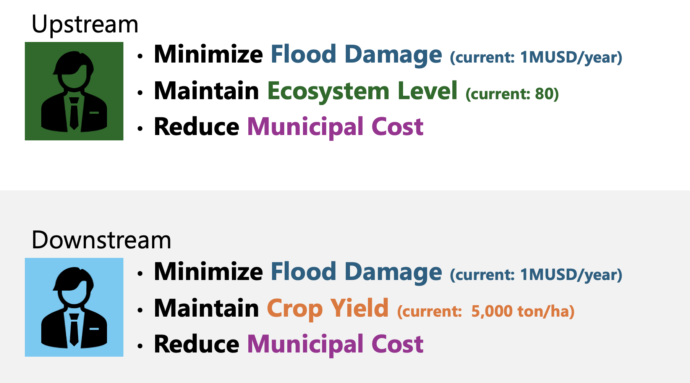
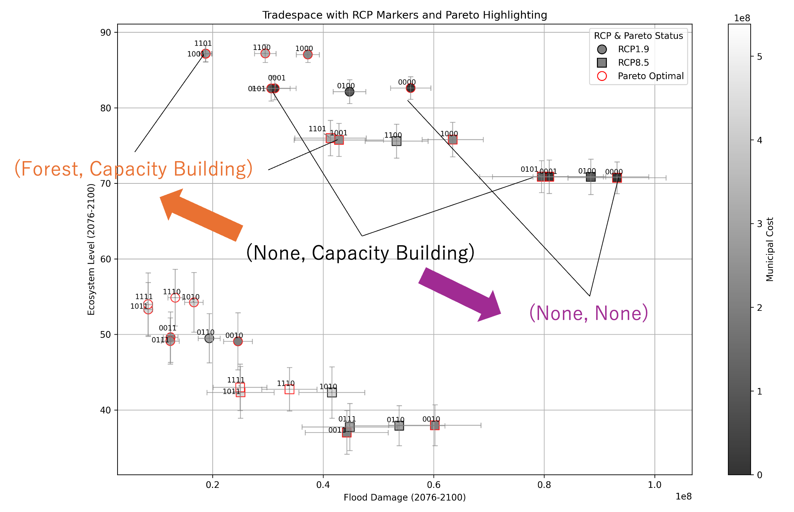

Working Group 3
立場の違いと協力の難しさを理論化し、実効性を高める
Theorizing Differences in Positions and Difficulties of Cooperation to Enhance Effectiveness
複数主体の意思決定を、目的・信念・情報の違いを含むゲームとして定式化し、協力が成立する条件や 制度設計の原理を明らかにします。
Formulates multi-stakeholder decision-making as games incorporating differences in objectives, beliefs, and information, revealing conditions for cooperation and principles of institutional design.
社会的課題
Societal Challenges
気候変動適応では、関係者が同じ将来リスクに直面していても、望ましい施策が一致するとは限りません。上流と下流、防災部局と環境部局、農業者と都市住民、現在世代と将来世代では、重視する指標や負担、受益の構造が異なります。ある主体にとって合理的な判断が、全体としては非効率な結果をもたらすこともあります。
また、将来の気候変動影響に対する認識や、どのシナリオを重く見るかという主観的な前提も、主体によって異なる可能性があります。こうした立場や認識の違いを考慮しなければ、適応パスウェイを提示しても、実際の協力や実行にはつながりにくいのが現状です。
In climate change adaptation, even when stakeholders face the same future risks, their preferred measures may not align. Upstream and downstream communities, disaster prevention and environmental departments, farmers and urban residents, present and future generations—each has different priorities, burdens, and benefit structures. What appears rational for one stakeholder may produce inefficient outcomes for the whole.
Moreover, perceptions of future climate change impacts and subjective assumptions about which scenarios to prioritize may differ among stakeholders. Without considering these differences in positions and perceptions, presenting adaptation pathways alone is unlikely to lead to actual cooperation and implementation.
学術的課題
Academic Challenges
WG3の学術的課題は、気候変動適応における複数主体の意思決定を、目的・信念・情報の違いを含むゲームとして定式化し、協力が成立する条件や制度設計の原理を明らかにすることです。
水資源管理や環境資源管理に対するゲーム理論の応用は、Madani（2010）やDinar and Hogarth（2015）などで整理されています。これらの研究は、水資源をめぐる競合や協力、非協力的な行動、利得構造の違いを分析する上で重要な基盤を提供しています。また、協力ゲーム理論は、Parrachino et al.（2006）などにより、水資源配分や共同管理における補償・分配ルールの分析に応用されてきました。
一方で、気候変動適応の文脈では、将来の不確実性、主体ごとの主観確率、複数の評価指標、時間的な見直し、分野横断の相互作用が同時に存在します。そのため、単純な利得構造だけでは、実際の適応意思決定を十分に表現できません。特に、同じ施策であっても、主体がどの将来シナリオを重く見るか、どの目的指標を重視するかによって、均衡解や協力可能性が変化し得ます。
近年では、持続可能な雨水管理において、多主体の選好、不確実性、MORDMを組み合わせる研究も現れています。これは、深い不確実性とステークホルダー間の対立を統合的に扱う方向性として参考になります。ただし、本プロジェクトが対象とする分野横断適応では、さらに複数分野の相互作用、適応パスウェイ、ワークショップで観察される実際の人間行動との接続が必要となります。
したがって、WG3では、理論上の均衡解と、参加型ワークショップで観察される実際の意思決定を比較し、限定合理性、情報共有、主観的将来認識、評価指標の違いが協力に与える影響を明らかにすることが重要な学術的課題となります。
The academic challenge of WG3 is to formulate multi-stakeholder decision-making in climate change adaptation as games incorporating differences in objectives, beliefs, and information, and to reveal conditions for cooperation and principles of institutional design.
Game theory applications to water and environmental resource management have been organized by Madani (2010) and Dinar and Hogarth (2015), providing important foundations for analyzing competition, cooperation, non-cooperative behavior, and differences in payoff structures regarding water resources.
However, in the context of climate change adaptation, future uncertainties, subjective probabilities by stakeholder, multiple evaluation indicators, temporal reassessment, and cross-sectoral interactions coexist simultaneously. Therefore, WG3 aims to compare theoretical equilibrium solutions with actual decision-making observed in participatory workshops, clarifying the impact of bounded rationality, information sharing, subjective future perceptions, and differences in evaluation indicators on cooperation.
研究上の問い
Research Questions
- 立場や目的関数の違いは、意思決定の均衡にどのような影響を与えるのか。
- 将来シナリオに対する主観的な見方の違いは、施策選択にどう影響するのか。
- 均衡解と社会的に望ましい解のギャップは、どのような条件で大きくなるのか。
- マクロ的な視点から見た緩和と適応の関係性の中で、上記の構造はどのように変化するのか。
- 情報共有、ルール変更、補償、インセンティブ設計は、協力を促すのか。
- ワークショップで観察される人間の行動は、理論的な均衡解とどのように異なるのか。
- How do differences in positions and objective functions affect decision-making equilibria?
- How do subjective views on future scenarios influence measure selection?
- Under what conditions does the gap between equilibrium solutions and socially desirable solutions become large?
- How do these structures change within the macro-level relationship between mitigation and adaptation?
- Does information sharing, rule changes, compensation, and incentive design promote cooperation?
- How does human behavior observed in workshops differ from theoretical equilibrium solutions?
主な活動
Key Activities
- 流域治水や水資源管理を対象としたゲームの定式化
- ナッシュ均衡と社会的最適解の比較
- Price of Anarchyによる非効率性の評価
- ベイジアンゲームによる不完備情報下の分析
- 協力ゲームによる補償・インセンティブ設計
- ワークショップで得られた行動データとの比較
- 合意形成を促す制度・情報提供ルールの検討
- 緩和と適応の関係性を踏まえた、よりマクロな意思決定構造の分析
- Formulating games for watershed flood control and water resource management
- Comparing Nash equilibria and socially optimal solutions
- Evaluating inefficiency through Price of Anarchy
- Analysis under incomplete information through Bayesian games
- Designing compensation and incentives through cooperative games
- Comparing with behavioral data obtained from workshops
- Examining institutional and information provision rules that promote consensus-building
- Analyzing macro-level decision structures considering the mitigation-adaptation relationship


WG3の成果
WG3 Outputs
WG3の成果は、気候変動適応における「協力の難しさ」と「協力を促す条件」の理論的理解です。 具体的には、以下の成果を目指します。
WG3's outputs are the theoretical understanding of "difficulties of cooperation" and "conditions that promote cooperation" in climate change adaptation. Specifically, we aim for:
- 分野横断適応問題における複数主体ゲームの定式化
- 主体ごとの目的関数、主観的将来認識、評価指標の違いを反映した利得構造
- ナッシュ均衡、社会的最適解、Price of Anarchy等に基づく非効率性の評価
- 目的や前提の違いによって協力が失敗するパターンの類型化
- 情報共有、ルール変更、補償、インセンティブ設計が均衡に与える影響の分析
- 協力を促す制度設計・メカニズムデザインの原理
- WG2のワークショップで検証可能な仮説とゲーム状況の設計
- WG1のモデルに反映可能な主体別評価関数や意思決定構造
- Formulating multi-stakeholder games for cross-sectoral adaptation problems
- Payoff structures reflecting differences in objective functions, subjective future perceptions, and evaluation indicators by stakeholder
- Evaluating inefficiency based on Nash equilibria, socially optimal solutions, Price of Anarchy, etc.
- Categorizing patterns where cooperation fails due to differences in objectives and assumptions
- Analyzing how information sharing, rule changes, compensation, and incentive design affect equilibria
- Principles of institutional design and mechanism design that promote cooperation
- Designing hypotheses and game situations verifiable in WG2 workshops
- Stakeholder-specific evaluation functions and decision structures applicable to WG1's models
WG間の連続性： WG3はWG1のモデルが提供する施策オプション・評価指標・利得構造をもとにゲームを定式化し、 その理論的知見はWG2のワークショップ設計（検証可能な仮説・ゲーム状況）に反映されます。 WG2で得られる行動データは、WG3の理論モデルをより現実的な合意形成メカニズムへと発展させます。
Inter-WG Connectivity: WG3 formulates games based on the measure options, evaluation indicators, and payoff structures provided by WG1's models, and its theoretical insights are reflected in WG2's workshop design (verifiable hypotheses and game situations). Behavioral data obtained from WG2 develops WG3's theoretical models into more realistic consensus-building mechanisms.